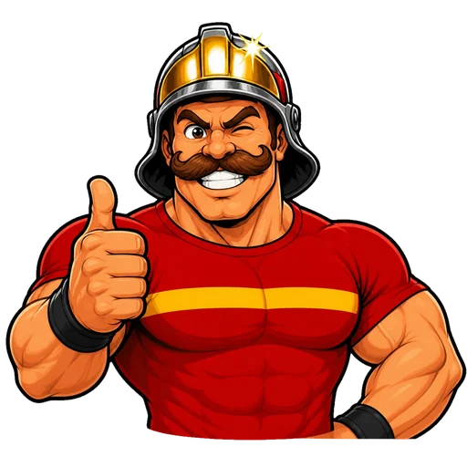

🚣 RAME EN DIRECT
connecter la machine
Ton bateau avance sur la mer au rythme de tes coups de rame.
1 Ton téléphone
🤖 Android
Ouvre le lien avec Chrome. Active le Bluetooth et la localisation (Android en a besoin pour trouver la machine).
🍏 iPhone
Safari ne sait pas encore se connecter en Bluetooth à une page web. Installe l'appli gratuite Bluefy (App Store) et ouvre le lien dans Bluefy. Active le Bluetooth.
2 La machine
🚣 Le rameur (écran Heubozen)
- Donne quelques coups de rame : l'écran s'allume.
- Vérifie qu'aucune autre appli (Kinomap, Zwift…) n'est reliée au rameur : une seule connexion à la fois.
- Dans l'appli, appuie sur 🔗 Connecter la machine.
- Choisis le rameur dans la liste, puis Associer.
- Rame : ton bateau part !
🎿 Le SkiErg (écran Concept2 PM5)
- Appuie sur Menu pour réveiller l'écran.
- Va dans Autres options, puis active le sans-fil (Wireless / Connecter).
- Dans l'appli, appuie sur 🔗 Connecter la machine.
- Choisis « PM5 … » dans la liste, puis Associer.
- Sur le PM5, choisis Ramer et tire : c'est parti !
3 Pendant la séance
- Choisis ton objectif (500 m à 5 000 m), ton personnage et le fantôme à battre.
- Garde le téléphone près de la machine (sur le support) et l'écran allumé.
- À l'arrivée au phare, tes mètres comptent pour le défi du centre.
🎖️ Ça ne marche pas ? Éteins et rallume le Bluetooth du téléphone, rame 10 secondes pour réveiller la machine, puis réessaie.
Si la machine n'apparaît jamais dans la liste, ce modèle n'a peut-être pas le Bluetooth : préviens l'admin. En attendant, l'appli marche aussi en simulation.
« Pas de Bluetooth ? Pas d'excuse. On rame quand même. » — Le Sergent-Chef
CIS CRUZY-QUARANTE · SDIS 34